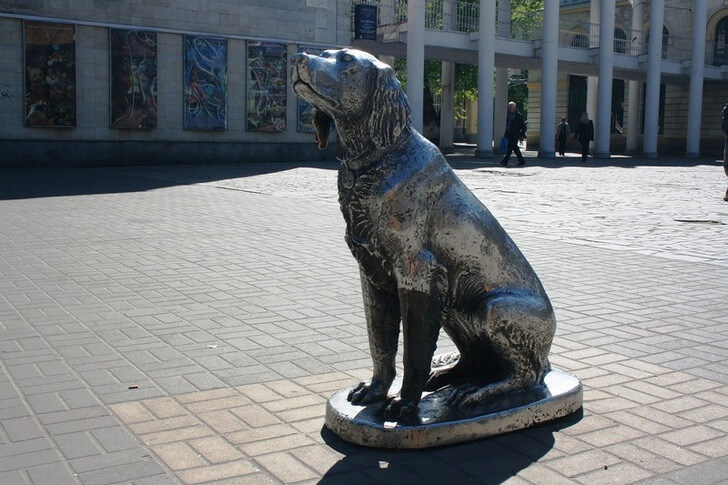

Один из неофициальных символов города, созданный скульпторами И. Дикуновым и Э. Пак по мотивам одноименного произведения. Интересно, что мастера изготавливали его исключительно на свои средства. Изваяние представляет собой фигуру собаки, сидящую прямо на брусчатке и терпеливо ожидающую возвращения своего хозяина. Памятник установили в 1998 году на проспекте Революции около театра кукол «Шут».
